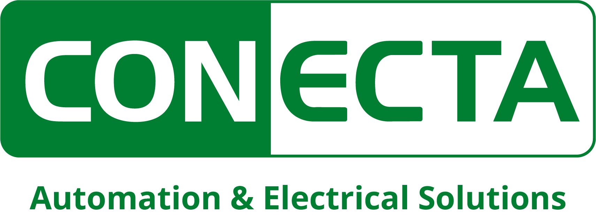

Cementos Melón S.A. · preparado por Conecta Ingeniería
Implementación e integración de la RTU Orion MX, el reloj GPS Kronos 3R y el switch Hermes 2000. Ingeniería, armado de armario, configuración, FAT, SAT, pruebas con el Coordinador y cierre técnico. Inicio previsto: 23 de noviembre de 2026.
Determinación de la carga adicional necesaria, reconfiguración del registro oscilográfico del relé, modificación del esquema y pruebas de verificación con informe. Parte del Estudio EDAC vigente. Inicio previsto: 23 de noviembre de 2026.